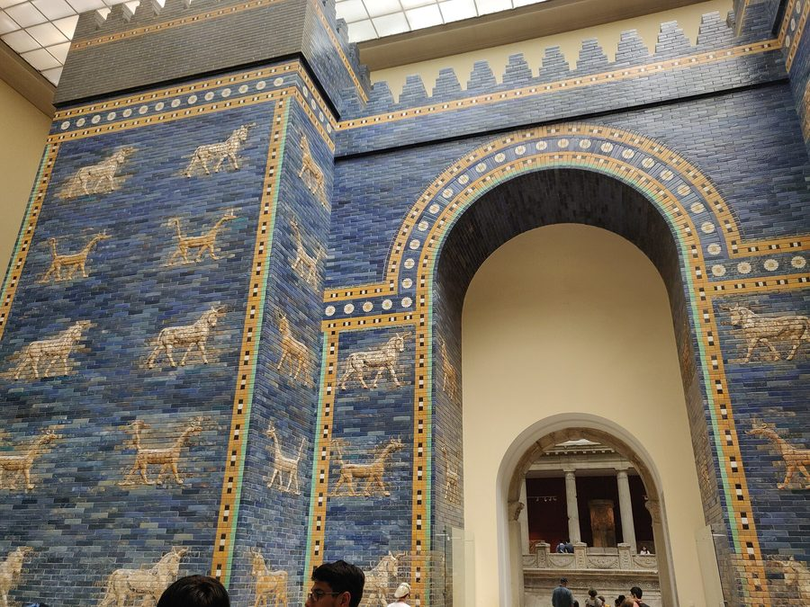
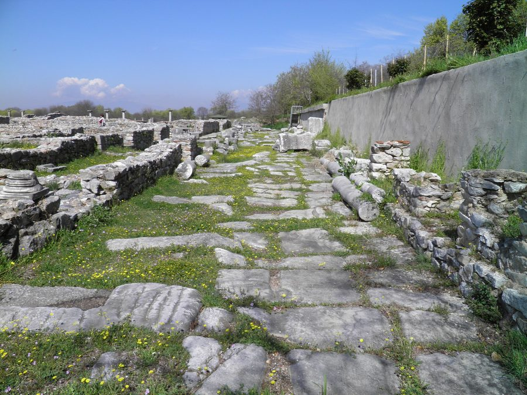

Para estudiar la Biblia
Cada relato de la Biblia, en su lugar y en su tiempo
Un mapa y una línea de tiempo movidos por una sola fecha. Elige un momento y verás quién vivía, dónde estaba y qué pasaba alrededor. Cada dato enlaza a su fuente.
Busca una persona, un lugar, un capítulo o un añoExplorar
Prueba:PedroHch 16607 a.e.c.BabiloniaGalión
Vista previa · época 6
Destierro y regreso
607 – después de 443 a.e.c. · Babilonia, Susa y Jerusalén
O empieza por una pregunta
¿Qué pasaba en Babilonia en tiempos de Jesús?
¿Quién había en Israel con los medos y persas?
¿Desde dónde escribió Pablo cada carta?
1De Adán al Diluvio4026 – 2370 a.e.c.Génesis 1-8
2Los patriarcas2370 – 1513 a.e.c.Génesis 9-50 · Abrahán cruza el Éufrates en 1943
3Éxodo y desierto1513 – 1473 a.e.c.Éxodo a Deuteronomio
4Josué y los jueces1473 – 1117 a.e.c.Josué, Jueces, Rut
5Reyes de Israel y Judá1117 – 607 a.e.c.1 Samuel a 2 Reyes · reino dividido en 997
6Destierro y regreso607 – d. 443 a.e.c.Daniel, Esdras, Ester, Nehemías, Ageo…
·Entre Malaquías y Mateod. 443 – 2 a.e.c.Sin libro bíblico: historia de nivel 2
7Jesús en la tierra2 a.e.c. – 33 e.c.Mateo, Marcos, Lucas, Juan
8La congregación cristiana33 – c. 98 e.c.Hechos a Apocalipsis

Recorrido · 8 paradasDe Babilonia a JerusalénEl regreso de 537 a.e.c. y el segundo templo, de 607 a 515.Empezar

Recorrido · Hechos 9-28Los viajes de PabloTres viajes, Cesarea y Roma, c. 47-61 e.c., con sus calzadas.Empezar

Recorrido · 14 cartasCartas y ciudadesDesde dónde escribe Pablo, a quién, y qué pasaba en las dos ciudades.Empezar
De dónde salen los datos
Nivel 1La Traducción del Nuevo Mundo y wol.jw.org. Enlazamos; no copiamos sus textos.
Nivel 2Arqueología e investigación, siempre con su fuente.
Sin verificarSe ve marcado, nunca escondido.